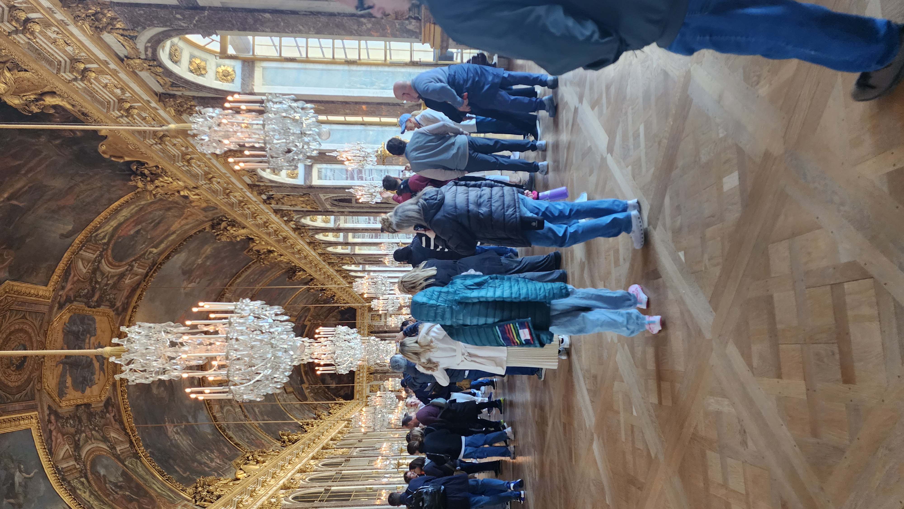
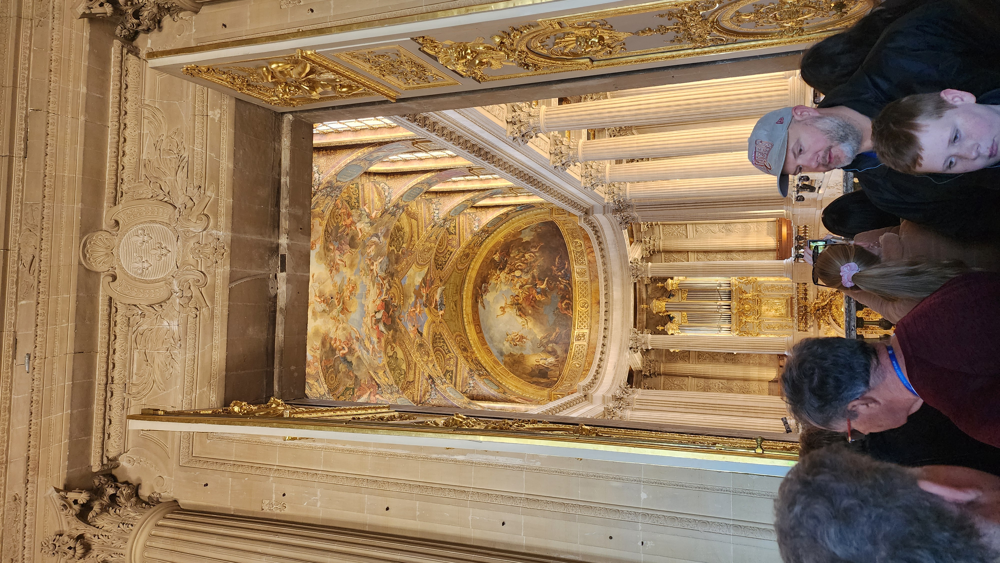
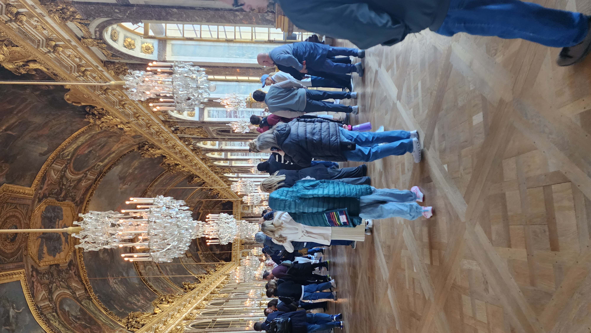
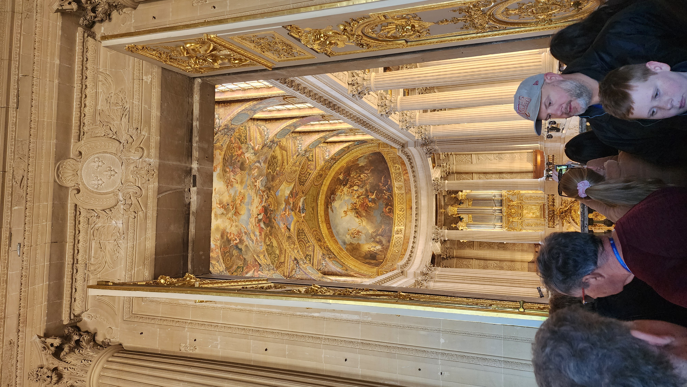

Chateau de Versailles
We took the T3a street trolley and then hopped on the RER train from Paris to Versailles. Public transportation in France has been convenient and efficient throughout our trip.
The palace was breathtaking but very crowded. Even with the massive halls, it felt like herding cattle — shoulder to shoulder with other visitors. The grandeur was impressive, but a guided tour would’ve helped us appreciate it more. We skipped the gardens, which required a separate ticket, but they looked beautiful from a distance.
We wrapped up our visit with a burger from Good Food and treated ourselves to a refreshing ice cream before heading back.
Versailles Photo Gallery
 





Eiffel Tower at Night
We had evening reservations to visit the Eiffel Tower. Despite the cold and windy weather, we took the elevator to the top for some breathtaking night views of Paris. The champagne bar was unfortunately closed, but the experience was still magical.
Compared to Versailles, it was crowded but less chaotic. The tower lit up and sparkled beautifully, closing out our busy day on a high note.